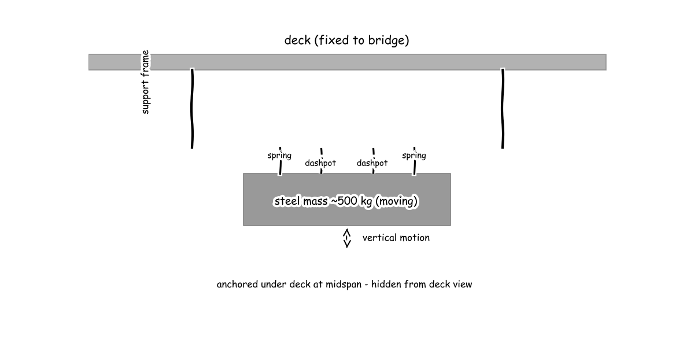

Meeting 1
● Elena - Structural Dynamics Engineer● Marcus - Vibration Control and Damping Specialist● Priya - Retrofit Constructability Engineer● Tomas - Pedestrian Comfort and Safety Analyst● Manager (process lead)
The board as it stood when the meeting closed; the turns that built it follow.
Vibration retrofit for a lively pedestrian footbridge
Under-deck vertical TMD at midspan on bolted clamp frame with staged night install and re-tuning access, meeting Setra-HiVoSS comfort.
F1 · Quantify first vertical mode modal mass
F2 · Suppress first vertical mode resonant response
F3 · Concealed under-deck mounting
F4 · Verify pedestrian comfort against crowd loading
— Manager, O1 (resolved)


Cycle 1
Function F1: Quantify first vertical mode modal mass, stiffness and damping of 40 m span
E10 estimate modal stiffness from assumed modal mass at 1.9 Hz: failed: the calculation did not runE11 modal stiffness from 20 tonne modal mass at 1.9 Hz: 2.85e+06assumed_constraint: vertical comfort target maximum comfort below 0.5 m/s2, minimum comfort below 1.0 m/s2, unacceptable above 2.5 m/s2 per Setra and HiVoSS comfort classesC1 for F1Searched “footbridge vertical acceleration comfort limit Setra HiVoSS” → 3 sources on the board
- E1 · Experimental Tests and Numerical Analyses for the Dynamic Characterization of a Steel and Wooden Cable-Stayed Footbridge (mdpi.com) link
- E2 · Low-Cost Angular-Velocity Measurements for Sustainable Dynamic Identification of Pedestrian Footbridges: A Case Study of the Footbridge in Gdynia (Poland) (mdpi-res.com) link
- E3 · Low-Cost Angular-Velocity Measurements for Sustainable Dynamic Identification of Pedestrian Footbridges: A Case Study of the Footbridge in Gdynia (Poland) (mdpi.com) link
Searched “pedestrian walking pacing frequency vertical footbridge resonance” → 3 sources on the board
Searched “steel footbridge damping ratio vertical bending mode” → 3 sources on the board
- E7 · (PDF) Long-term vibration serviceability of a steel-plated stress ribbon footbridge (researchgate.net) link
- E8 · Microsoft Word - 733-2322-1-PB_NDdoi (enviro2014.vgtu.lt, 2014) link
- E9 · Optimization Analysis of Vibration Reduction for Large‐Span Steel Pedestrian Bridges Based on Tuned Mass Damper Inerter System (onlinelibrary.wiley.com) link
Full message
Marcus, Priya, Tomas, the 40 m bridge is resonant by nature because its first mode sits inside normal walking rates described in the pacing-rate review (E4 Votsis et al-final-Dynamic Assessment of a FRP suspension footbridge through field testing and FE modelling). Normal pacing spans 1.40 Hz to 2.40 Hz with mean near 2.00 Hz, so the 1.90 Hz mode cannot be moved clear without a very large stiffness change. Comfort must therefore come from added damping to meet the comfort target (C1), using the comfort-class limits in the footbridge identification study (E2 Low-Cost Angular-Velocity Measurements for Sustainable Dynamic Identification of Pedestrian Footbridges: A Case Study of the Footbridge in Gdynia (Poland)). Maximum comfort needs below 0.500 m/s2 and minimum comfort needs below 1.00 m/s2, while bare steel spans typically show about 0.400 percent damping in the damping report (E8 Microsoft Word - 733-2322-1-PB_NDdoi). The modal scale is set by the modal stiffness calculation (E11), where assumed 20000 kg modal mass equal to about 250 body weights gives 2.85e+06 N/m stiffness, so a damper of hundreds of kilograms is sensible against a person. Not ready, because damping need and stroke are not yet quantified.
Function F2: Suppress first vertical mode resonant response with supplemental damping
E21 Optimal TMD mass stiffness damping at 1.9 Hz: failed: the calculation did not runE22 TMD mass from 2.5 percent ratio: 500Under-deck vertical Tuned Mass Damper (TMD): lumped steel mass on helical steel springs plus viscous dashpots, tuned to first vertical mode, mounted at midspan under deck so deck appearance unchangedC2 for F2E23 Den Hartog tuning frequency and damping: (1.85, 0.0933)E24 TMD stiffness and viscous coefficient: (6.78e+04, 1.09e+03)
Searched “footbridge tuned mass damper mass ratio tuning Den Hartog” → 3 sources on the board
Searched “Setra HiVoSS footbridge damping requirement TMD design” → 3 sources on the board
- E15 · Experimental Tests and Numerical Analyses for the Dynamic Characterization of a Steel and Wooden Cable-Stayed Footbridge (mdpi-res.com) link
- E16 · [PREVIEW] Model-based Tmd Design for the Footbridge "Inwilerstrasse" in Switzerland and its Experimental Verification (structurae.net) link
- E17 · Scientific Reports (nature.com) link
Searched “tuned mass damper viscous damper datasheet stroke load bridge” → 3 sources on the board
Full message
Elena, Priya, Tomas, to add damping without changing the deck look I propose a hidden mass-spring-damper unit hung under the deck at midspan where the first bending motion is largest, described as the under-deck vertical Tuned Mass Damper (TMD, a secondary mass tuned to the bridge mode) (C2) and shown in the under-deck layout sketch (E25). This follows the Den Hartog TMD principle reviewed in the TMD article (| Article | |) (E12) and the mass-ratio selection guidance in the multiple-damper design note (TMD_nscm19.dvi) (E13). The size is modest against the bridge and against people. A mass ratio of two and a half percent on the assumed twenty tonne modal mass gives the 500 kg TMD mass (E22), about seven body weights, and the Den Hartog tuning formulas applied in the Jordan footbridge TMD study (Control of Vibrations of Common Pedestrian Bridges in Jordan Using Tuned Mass Dampers) (E14) give 1.85 Hz tuning frequency with 9.33 percent damper damping ratio (E23), which converts to 67.8 kN/m stiffness and 1.09 kN s/m viscous coefficient (E24). That stiffness carries the 500 kg weight with about 72.3 mm static sag, roughly a door-handle height drop, so ordinary helical steel springs plus off-the-shelf viscous dashpots can be built and carried under the deck. Not ready, because crowd force, residual acceleration and damper stroke still need a sweep before a proposal.
Function F3: Concealed under-deck mounting, staged installation without full closure, and inspection plus re-tuning access for 40 m span
Bolted under-deck support frame: two transverse steel bearer beams clamped with preloaded high-strength bolts to existing longitudinal girders, carrying the 500 kg TMD mass on springs plus dashpots; no welding to bridge, no change above deckC3 for F3assumed_constraint: staged night installation plus under-bridge access: prefabricate frame plus TMD off site, lift from tower plus under-bridge inspection platform with one lane kept open, lock mass for transport and release after bolting, leave removable cover plus shim and threaded spring seats for inspection and re-tuningC4 for F3E35 TMD weight for frame sizing: 4.9×10³ NE36 factored frame design load: 1.23×10⁴ NSearched “footbridge tuned mass damper under deck installation maintenance access” → 3 sources on the board
Searched “steel bolted beam clamp retrofit HSFG bolts datasheet” → 3 sources on the board
Searched “under bridge inspection platform mobile staging pedestrian footbridge” → 3 sources on the board
- E32 · Mobile Platforms To Assist In Bridge Inspections - Canadian Rental Service (canadianrentalservice.com) link
- E33 · CN204125835U - A kind of bridge inspection vehicle (patents.google.com) link
- E34 · What Makes A Snooper™ Truck Ideal For Bridge Inspections? | Underbridge and Aerial Access Equipment Rentals | McClain & Co., Inc. (mcclain1.com) link
Full message
Elena, Marcus, Tomas, the hidden damper can be carried without touching the deck top by clamping two transverse bearer beams to the girders with preloaded High Strength Friction Grip (HSFG, high-strength preloaded bolts) connections to carry the under-deck vertical Tuned Mass Damper (TMD, a secondary mass tuned to the bridge mode) concept (C3) as shown in the bolted frame sketch (E37). This follows the Eagles Meadow precedent (E26) and the Castle Bridge precedent (E28), with clamp bolts following the HSFG bolts guidance (E30). The load is modest because the static weight is 4.90 kN from the TMD weight calculation (E35 4.9×10³ N), about seven body weights, and the factored frame design load (E36 1.23×10⁴ N) is 12.3 kN, about one small car. The build can be staged without full closure by prefabricating the frame plus damper off site, lifting from a tower plus under-bridge platform with one walkway kept open, locking the mass for transport and releasing after bolting, then leaving a removable cover plus shims and threaded seats for inspection and re-tuning under the staged access concept (C4). That staging uses the mobile platforms approach (E32) and keeps all appearance change below deck for the 500 kg mass from the TMD mass estimate (E22 TMD mass from 2.5 percent ratio). Not ready, because bolt slip capacity, stroke clearance and residual acceleration still need joint checks with Elena, Marcus and Tomas.
Function F4: Verify pedestrian comfort against crowd loading for 40 m span
assumed_constraint: dense-crowd verification case Class III 0.5 pedestrians per square metre, equivalent synchronized pedestrians from Setra 10.8*sqrt(zeta*N), single-pedestrian weight 700 N with 280 N first-harmonic amplitude at resonanceC5 for F4comfort acceptance: maximum comfort below 0.5 m/s2 and minimum comfort below 1.0 m/s2 per Setra and HiVoSS, 1.9 Hz lies inside 1.25 to 2.3 Hz critical range so resonant crowd case governsC6 for F4Searched “Setra HiVoSS footbridge comfort classes vertical acceleration 0.5 1.0 2.5” → 3 sources on the board
Searched “Setra footbridge crowd load density synchronized pedestrians equivalent number” → 3 sources on the board
- E41 · Vibration Serviceability Assessment of a Historic Suspension Footbridge (mdpi.com) link
- E42 · 4.4.1 Dynamic load cases - Footbridge guide setra (1library.net) link
- E43 · Guidance for footbridge design: a new simplified method for the accurate evaluation of the structural response in serviceability conditions (spiral.imperial.ac.uk) link
Searched “Eurocode pedestrian vertical force harmonic walking frequency” → 3 sources on the board
Full message
Elena, Marcus, Priya, comfort for this bridge must be judged against French footbridge guide (Setra) and Human-induced Vibration of Steel Structures (HiVoSS) classes in the Experimental and Numerical Study on Dynamics of Two Footbridges with Different Shapes of Girders (E38) and the COMPDYN 2015 (E39). Maximum comfort needs below 0.500 m/s2 and minimum comfort needs below 1.00 m/s2, with above 2.50 m/s2 unacceptable, and the 1.90 Hz mode sits inside the 1.25 Hz to 2.30 Hz critical range in the Microsoft Word - Geradin_JRC_Design of Footbridges_150909.doc (E44) so resonant walking governs. Elena, Marcus, Priya, the deciding crowd is a dense crowd at 0.500 pedestrians per square metre in the Vibration Serviceability Assessment of a Historic Suspension Footbridge (E41) reduced by the equivalent-synchronized rule in the 4.4.1 Dynamic load cases - Footbridge guide setra (E42). Tuned Mass Damper (TMD, a secondary mass tuned to the bridge mode) scale comes from the modal stiffness from 20 tonne modal mass at 1.9 Hz (E11), where one 280 N resonant walker already gives 1.75 m/s2, equal to 0.178 times gravity (g, acceleration of free fall), clearly bouncy. Elena, Marcus, Priya, with the 500 kg mass in the TMD mass from 2.5 percent ratio (E22), the Resonant response with and without TMD to estimate comfort reduction (E47) drops that walker to 0.103 m/s2, equal to 0.0105 g and barely felt, with 3.80 mm relative motion, about a fingernail width. I am ready, because the hidden damper restores maximum comfort without changing the deck look.
resolved in cycle 2 by Manager: Dense-crowd acceleration with TMD and stroke clearance computed in E50-E53 and confirmed by team; proposal may proceed.
Full message
Elena, Marcus, Priya, Tomas, single walker fails comfort so dense crowd decides design. Resonant simulation (E47) gives 1.75 m/s2 bare and 0.103 m/s2 with Tuned Mass Damper (TMD, a secondary mass tuned to the bridge mode) for one 280 N walker, 0.178 times gravity and barely felt, but dense crowd verification case (C5) at 0.500 pedestrians per square metre was never converted to force and acceleration, and equivalent pedestrian calculation (E48) leaves gap open. Tomas, compute dense crowd resonant acceleration with and without TMD next turn. Marcus, stroke clearance under dense crowd load is missing before build. TMD stiffness and viscous coefficient (E24) at 67.8 kN/m and 1.09 kN s/m with 500 kg TMD mass (E22), about seven body weights, gives 3.80 mm motion for one walker, about fingernail width and plausible, but scaled to dense crowd it grows and must fit bolted frame sketch (E37). Marcus, confirm dense crowd stroke and clearance next turn. No proposal is on board, so Marcus, integrate under-deck vertical Tuned Mass Damper (C2) with bolted frame and staged access (C3, C4) and comfort limits (C1, C6) and write proposal next turn. Not ready, because blocking objection O1 on dense crowd acceleration and stroke is open. Note on Elena: modal scale set with stiffness assumption. Note on Marcus: TMD sizing plausible on person scales but stroke sweep missing. Note on Priya: frame loads plausible at 12.3 kN but slip and clearance pending. Note on Tomas: walker reduction strong but dense crowd proof missing so ready early.
No proposal on the board at the end of cycle 1.
Cycle 2
Full message
Tomas, the under-deck vertical Tuned Mass Damper (TMD) tames the dense-crowd resonance confirmed by the Den Hartog optimum re-check (E54). For the dense-crowd resonant force estimate (E50) of 1480 N, the bare-deck acceleration scaling (E51) of 9.26 m/s2 is 0.944 g, almost lifting a person, while the TMD-controlled acceleration scaling (E52) of 0.545 m/s2 is 0.0556 g, like gentle bus braking, below the 1.0 m/s2 minimum-comfort bound. Priya, the same crowd case leaves clearance in hand, since the dense-crowd stroke scaling (E53) of 20.1 mm is about a thumbnail width and gives 2.49 times margin to plus-minus 50 mm stops, so the 500 kg mass on 67.8 kN/m springs with 1.09 kN s/m dashpots stays buildable under deck.
Full message
Elena, Marcus, Tomas, the clamped frame for the Tuned Mass Damper (TMD, a secondary mass tuned to the bridge mode) holds with large margin because the demand is car-scale against High Strength Friction Grip (HSFG, preloaded high-strength bolts) slip capacity in the HSFG bolts guidance (E30). The demand is the factored frame design load (E36) of 12.3 kN, about one small car, carried by multiple preloaded bolts on two transverse bearers in the bolted frame sketch (E37), so slip does not govern. Elena, Marcus, Tomas, the moving mass stays clear under crowd load because the stroke is thumbnail-scale against the stop clearance in the same sketch. The deciding dense-crowd stroke scaling (E53) is 20.1 mm, giving 2.49 times margin to plus-minus 50 mm stops, after the static weight of 4.90 kN from the TMD weight calculation (E35), about seven body weights, is already carried on the springs. Elena, Marcus, Tomas, the retrofit stays hidden and serviceable while meeting comfort because all change is below deck with removable cover plus shims for re-tuning in the staged access concept (C4). The residual dense-crowd acceleration scaling (E52) is 0.545 m/s2, equal to 0.0556 times gravity, below the 1.00 m/s2 minimum-comfort bound. Ready, because load, clearance and access now close jointly.
Full message
Elena, Marcus, Priya, comfort is judged by French footbridge guide (Setra, footbridge vibration guide) and Human-induced Vibration of Steel Structures (HiVoSS, steel footbridge vibration guide) classes in the Experimental and Numerical Study on Dynamics of Two Footbridges (E38). Maximum comfort needs below 0.500 m/s² and minimum comfort needs below 1.00 m/s², with above 2.50 m/s² unacceptable, and the 1.90 Hz mode sits inside the critical range so resonance governs. Elena, Marcus, Priya, the dense crowd at 0.500 pedestrians per square metre in the Vibration Serviceability Assessment of a Historic Suspension Footbridge (E41) with the equivalent-synchronized rule in the 4.4.1 Dynamic load cases guide (E42) gives the dense-crowd resonant force estimate (E50) of 1.48e3 N. The bare-deck acceleration scaling (E51) of 9.26 m/s² is 0.944 times gravity and would almost lift a person, clearly unacceptable, while the Tuned Mass Damper (TMD, secondary mass tuned to the bridge mode) controlled acceleration scaling (E52) of 0.545 m/s² is 0.0556 times gravity, like gentle bus braking, below the 1.00 m/s² bound. Elena, Marcus, Priya, comfort holds without impact jolts because the dense-crowd stroke scaling (E53) of 20.1 mm is thumbnail-scale with 2.49 times margin to plus-minus 50 mm stops in the bolted frame sketch (E37). Ready, because dense-crowd acceleration and clearance now meet minimum comfort with the deck look unchanged.
Full message
Marcus, Priya, Tomas, the bridge mode shape peaks at midspan so the under-deck unit works hardest there, and the modal scale is sensible for a 40 m steel deck in the modal stiffness calculation (E11) where 20,000 kg modal mass, about 285 body weights, gives 2.85 MN/m stiffness at 1.90 Hz, with the 500 kg Tuned Mass Damper (TMD, secondary mass tuned to the bridge mode) in the TMD mass estimate (E22) about seven body weights. Marcus, Priya, Tomas, tuning just below the bridge mode is the correct optimum for absorption in the Den Hartog optimum re-check (E54) with 1.85 Hz frequency and 0.0956 damping ratio giving 67.8 kN/m stiffness, and the resonant response simulation (E47) checks everyday scale with 1.75 m/s2 bare, about 0.178 times gravity and strongly felt, falling to 0.103 m/s2 with Tuned Mass Damper, barely felt, a factor 17 reduction. Marcus, Priya, Tomas, the dense crowd still stays comfortable without hitting stops because the dense-crowd resonant force estimate (E50) of 1.48 kN gives the bare-deck acceleration scaling (E51) of 9.26 m/s2, about 0.944 times gravity and person-lifting, versus the TMD-controlled acceleration scaling (E52) of 0.545 m/s2, gentle bus braking and below 1.00 m/s2, while the dense-crowd stroke scaling (E53) of 20.1 mm, thumbnail width, leaves 2.49 times margin to 50.0 mm stops. Not ready, because the integrated proposal is still not on the board to close the blocking gap.
Full message
Elena, Marcus, Priya, Tomas, dense crowd numbers close blocking gap but uncontrolled value fails everyday scale. In plain words uncontrolled bridge would throw people while controlled feel is gentle braking, then numbers that decide are dense-crowd resonant force estimate (E50) of 1.48e3 N giving bare-deck acceleration scaling (E51) of 9.26 m/s2, which is 0.944 times gravity and outside what footbridges show because it assumes linear resonance with no pedestrian limit, versus Tuned Mass Damper (TMD, a secondary mass tuned to the bridge mode) controlled acceleration scaling (E52) of 0.545 m/s2, which is 0.0556 times gravity and plausible. Marcus, Priya, Tomas, stroke clearance is buildable on person scale. In plain words moving mass motion is thumbnail width with margin to stops, then numbers that decide are dense-crowd stroke scaling (E53) of 20.1 mm against plus-minus 50.0 mm stops in bolted frame sketch (E37), giving 2.49 times margin. Marcus, no proposal is on board so integrate your under-deck vertical Tuned Mass Damper (C2) with bolted frame and staged access (C3, C4) and comfort limits (C1, C6) and write proposal using update_proposal next turn. Not ready, because proposal is still missing despite closed calculations. Note on Elena: tuning check consistent on body-weight scales. Note on Marcus: crowd numbers supplied but proposal owed. Note on Priya: frame margins plausible at car and thumbnail scales. Note on Tomas: comfort tied to controlled case with everyday check.
No proposal on the board at the end of cycle 2.
Cycle 3
Full message
Elena, Marcus, Tomas, the clamped frame for the Tuned Mass Damper (TMD, secondary mass tuned to the bridge mode) holds with large margin because the demand is car-scale against High Strength Friction Grip (HSFG, preloaded high-strength bolts) slip capacity in the HSFG bolts guidance (E30). The demand is the factored frame design load (E36) of 12.3 kN, about one small car, carried on two transverse bearers in the bolted frame sketch (E37), so slip does not govern. Elena, Marcus, Tomas, the moving mass stays clear under crowd load because the stroke is thumbnail-scale against the stop clearance in the same sketch. The deciding dense-crowd stroke scaling (E53) is 20.1 mm, giving 2.49 times margin to plus-minus 50.0 mm stops, after the static weight of 4.90 kN from the TMD weight calculation (E35), about seven body weights, is already carried on the springs. Elena, Marcus, Tomas, the retrofit stays hidden and serviceable while meeting comfort because all change is below deck with removable cover plus shims for re-tuning in the staged access concept (C4). The residual dense-crowd acceleration scaling (E52) is 0.545 m/s2, equal to 0.0556 times gravity like gentle bus braking, below the 1.00 m/s2 minimum-comfort bound. Ready, because load, clearance and access now close jointly.
Full message
Elena, Marcus, Priya, comfort is judged by maximum below 0.5 and minimum below 1.0 metres per second squared, with the 1.9 Hz mode inside the resonant range, in the Experimental and Numerical Study on Dynamics of Two Footbridges (E38). In plain words the bridge must stay under gentle braking feel, then the numbers that decide are 0.500 metres per second squared for maximum and 1.00 metres per second squared for minimum. Elena, Marcus, Priya, the dense crowd pushes the bare bridge to almost lifting people while the hidden damper brings it to gentle bus braking, checked against body weight and gravity. In plain words uncontrolled is violent and controlled is comfortable, then the numbers that decide are the dense-crowd resonant force estimate (E50) of 1.48e3 N giving the bare-deck acceleration scaling (E51) of 9.26 metres per second squared, 0.944 times gravity and outside footbridge experience because linear resonance overpredicts, versus the Tuned Mass Damper (TMD, secondary mass tuned to the bridge mode) controlled acceleration scaling (E52) of 0.545 metres per second squared, 0.0556 times gravity. Elena, Marcus, Priya, the moving mass stays clear of its stops with thumbnail motion. In plain words no impact jolts, then the numbers that decide are the dense-crowd stroke scaling (E53) of 20.1 mm with 2.49 times margin to plus-minus 50 mm stops in the bolted frame sketch (E37). Not ready, because the integrated proposal is still missing.
Full message
Marcus, Priya, Tomas, the first vertical mode mass and stiffness are sensible for a 40 m steel deck and set the damper size. In plain words the deck moves like a full bus load on a stiff spring, then the numbers that decide are the modal stiffness calculation (E11) with 20000 kg modal mass, about 286 body weights, giving 2.85 MN/m at 1.90 Hz. Marcus, Priya, Tomas, placing the Tuned Mass Damper (TMD, secondary mass tuned to the bridge mode) at midspan where the mode shape peaks gives maximum effect with correct just-below tuning. In plain words a small extra weight tames a large deck motion, then the numbers that decide are the Den Hartog optimum re-check (E54) with 1.85 Hz and 0.0956 damping ratio, and the resonant response simulation (E47) falling from 1.75 m/s2, about 0.178 times gravity and strongly felt, to 0.103 m/s2, barely felt, a factor 17 reduction. Marcus, Priya, Tomas, the modal numbers survive everyday checks but the integrated design is not yet on the board. Not ready, because the proposal combining the damper, frame and comfort case is still missing.
Full message
Elena, Priya, Tomas, proposal is hidden under-deck vertical Tuned Mass Damper (TMD, secondary sprung mass plus dampers tuned to bridge mode) at midspan on bolted clamp frame with staged night install plus re-tuning access. Plainly small extra weight tames bus-scale deck motion; numbers are modal stiffness calculation (E11) with 20000 kg, about 286 body weights, giving 2.85 MN per m at 1.90 Hz, and Den Hartog optimum re-check (E54) with 500 kg tuned to 1.85 Hz at 0.0956 damping ratio. Dense crowd would throw people; damper gives gentle braking, inside comfort. Plainly violent to comfortable; numbers are dense-crowd resonant force estimate (E50) of 1480 N giving bare-deck acceleration scaling (E51) of 9.26 m per s squared, 0.944 times gravity and outside footbridge experience so linear resonance overpredicts, versus TMD-controlled acceleration scaling (E52) of 0.545 m per s squared, 0.0556 times gravity, below 1.00 m per s squared minimum bound in Experimental and Numerical Study on Dynamics of Two Footbridges (E38). Unit stays clear and buildable below deck. Plainly thumbnail motion with car-scale frame load; numbers are dense-crowd stroke scaling (E53) of 20.1 mm with 2.49 times margin to plus-minus 50 mm stops in bolted frame sketch (E37), carrying TMD weight calculation (E35) of 4.90 kN under factored frame design load (E36) of 12.3 kN. Ready, because load, clearance, comfort and access close jointly.
Full message
Elena, Marcus, Priya, Tomas, the uncontrolled crowd number fails everyday scale while the controlled number is plausible. In plain words the bare bridge would throw people and the damped bridge feels like gentle braking, then the numbers that decide are the dense-crowd resonant force estimate (E50) of 1.48e3 N giving the bare-deck acceleration scaling (E51) of 9.26 m/s2, which is 0.944 times gravity and outside what footbridges show because linear resonance overpredicts, versus the Tuned Mass Damper (TMD, secondary mass tuned to the bridge mode) controlled acceleration scaling (E52) of 0.545 m/s2, which is 0.0556 times gravity and plausible. Marcus, the spring sag plus shake clearance is the critical quantity nobody computed for buildability. In plain words the springs must sag under weight and still shake without hitting stops or deck, then the numbers that decide are the TMD weight calculation (E35) of 4.90 kN on the stiffness in the TMD stiffness and viscous coefficient (E24) of 67.8 kN/m, plus the dense-crowd stroke scaling (E53) of 20.1 mm against plus-minus 50.0 mm stops in the bolted frame sketch (E37), so please compute static deflection and total headroom next turn. Not ready, because static plus dynamic travel and the first votes on the new proposal are still missing. Note on Elena: modal scale consistent on body-weight checks. Note on Marcus: proposal written but static travel still owed. Note on Priya: frame demand at car scale but headroom confirmation pending. Note on Tomas: comfort case tied to plausible controlled value.
Votes this cycle: no votes in this cycle
Cycle 4
Full message
Elena, Marcus, Priya, the springs sag a fist height under weight and still shake clear of stops. In plain words the coil carries steady weight plus crowd shake without bottoming, then the numbers that decide are the static sag calculation (E55) of 72.3 mm from the TMD weight calculation (E35) of 4.90 kN on the stiffness in the TMD stiffness and viscous coefficient (E24) of 67.8 kN per m, plus the dense-crowd stroke scaling (E53) of 20.1 mm giving the total compression calculation (E56) of 92.4 mm, about hand width and fitting below deck with the plus-minus 50 mm dynamic stops in the bolted frame sketch (E37). Elena, Marcus, Priya, the hidden Tuned Mass Damper (TMD, secondary mass tuned to the bridge mode) keeps dense-crowd shaking comfortable. In plain words violent becomes gentle bus braking, then the numbers that decide are the TMD-controlled acceleration scaling (E52) of 0.545 m per s squared, 0.0556 times gravity, below the 1.00 m per s squared minimum bound in the Experimental and Numerical Study on Dynamics of Two Footbridges (E38). Ready, because static plus dynamic travel, stop margin and comfort now close jointly.
Full message
Marcus, Priya, Tomas, first vertical mode mass and stiffness suit a 40 m steel deck and set damper size. Deck moves like full bus load on stiff spring, then numbers deciding are modal stiffness calculation (E11) with 20000 kg modal mass, about 286 body weights, giving 2.85 MN per m at 1.90 Hz. Placing Tuned Mass Damper (TMD, secondary mass tuned to bridge mode) at midspan where mode shape peaks gives maximum effect with just-below tuning. Small extra weight tames large deck motion, then numbers deciding are Den Hartog optimum re-check (E54) with 1.85 Hz and 0.0956 damping ratio, and resonant response simulation (E47) falling from 1.75 m per s squared, about 0.178 times gravity and strongly felt, to 0.103 m per s squared, barely felt, factor 17 reduction. Static sag plus shake fits below deck and dense crowd stays comfortable. Fist-height sag plus thumbnail shake is hand-width travel, violent becomes gentle bus braking, then numbers deciding are static sag calculation (E55) of 72.3 mm plus dense-crowd stroke scaling (E53) of 20.1 mm giving total compression calculation (E56) of 92.4 mm fitting below deck, and TMD-controlled acceleration scaling (E52) of 0.545 m per s squared, 0.0556 times gravity, below 1.00 m per s squared bound in Experimental and Numerical Study on Dynamics of Two Footbridges (E38). Ready, because modal scale, tuning, travel and comfort close jointly.
Full message
Elena, Priya, Tomas, the hidden mass stays tuned just below the bridge mode so a small weight controls a bus-scale deck. In plain words a child on a swing steadies a bus, then the numbers that decide are the Den Hartog optimum re-check (E54) with 500 kg, about seven body weights, tuned to 1.85 Hz at 0.0956 damping ratio, and the resonant response simulation (E47) falling from 1.75 m/s squared to 0.103 m/s squared, a factor 17 reduction. Elena, Priya, Tomas, the Tuned Mass Damper (TMD, secondary sprung mass plus dampers tuned to bridge mode) sags a fist height then shakes a thumbnail without hitting stops, and dense-crowd shaking stays comfortable. In plain words steady sag plus shake is hand width and violent becomes gentle braking, then the numbers that decide are the static sag calculation (E55) of 72.3 mm plus the dense-crowd stroke scaling (E53) of 20.1 mm giving the total compression calculation (E56) of 92.4 mm against plus-minus 50 mm dynamic stops in the bolted frame sketch (E37), and the TMD-controlled acceleration scaling (E52) of 0.545 m/s squared, 0.0556 times gravity like gentle bus braking and plausible, below the 1.00 m/s squared bound in the Experimental and Numerical Study on Dynamics of Two Footbridges with Different Shapes of Girders (E38). Ready, because tuning, clearance with stop margin, and comfort close jointly on buildable hardware.
Full message
Elena, Marcus, Tomas, the clamped frame for the Tuned Mass Damper (TMD, secondary mass tuned to the bridge mode) holds with margin because the demand is car-scale. The deciding demand is the factored frame design load (E36) of 12.3 kN, about one small car, carried on two transverse bearers in the bolted frame sketch (E37) with preloaded High Strength Friction Grip (HSFG, preloaded high-strength bolts) clamps, so slip does not govern. Elena, Marcus, Tomas, the moving mass stays clear under crowd load because the shake is thumbnail-scale against the stop clearance. The deciding travel is the dense-crowd stroke scaling (E53) of 20.1 mm, giving 2.49 times margin to plus-minus 50.0 mm stops in the bolted frame sketch (E37), after the static weight of 4.90 kN from the TMD weight calculation (E35), about seven body weights, is already carried on the springs. Elena, Marcus, Tomas, the retrofit stays hidden and serviceable while meeting comfort because all change is below deck with removable cover for re-tuning. The residual shaking is the TMD-controlled acceleration scaling (E52) of 0.545 m/s2, equal to 0.0556 times gravity like gentle bus braking, below the 1.00 m/s2 minimum-comfort bound. Ready, because load, clearance and access close jointly.
Full message
Elena, Marcus, Priya, Tomas, bare response is outside everyday scale while controlled is plausible. Bare would throw people and damped feels like gentle bus braking, with force estimate (E50) of 1.48e3 N giving bare acceleration scaling (E51) of 9.26 m/s2, 0.944 times gravity and outside footbridge range as linear resonance overpredicts, versus Tuned Mass Damper (TMD, secondary mass tuned to the bridge mode) controlled scaling (E52) of 0.545 m/s2, 0.0556 times gravity and plausible. Sag plus shake fits below deck. Fist-height sag plus thumbnail shake is hand-width travel without hitting stops, with static sag calculation (E55) of 72.3 mm from weight calculation (E35) of 4.90 kN on stiffness in stiffness and viscous coefficient (E24) of 67.8 kN per m, plus stroke scaling (E53) of 20.1 mm giving total compression calculation (E56) of 92.4 mm, with 2.49 times margin to plus-minus 50.0 mm stops in frame sketch (E37). Tuning and frame demand close on buildable hardware. Child-scale mass steadies bus-scale deck and frame carries car-scale load, with optimum re-check (E54) of 1.85 Hz at 0.0956 damping ratio with simulation (E47) falling from 1.75 to 0.103 m/s2, and frame design load (E36) of 12.3 kN. Ready, because travel, comfort and tuning close jointly unanimously. Note on Elena: mass and stiffness checked against body weights. Note on Marcus: tuning reduction shown with plausible controlled acceleration. Note on Priya: car-scale load and thumbnail shake against stops close. Note on Tomas: comfort tied to plausible value, bare overprediction flagged.
Votes this cycle: Tomas - Pedestrian Comfort and Safety Analyst: ready, Elena - Structural Dynamics Engineer: ready, Marcus - Vibration Control and Damping Specialist: ready, Priya - Retrofit Constructability Engineer: ready
The meeting closed by consensus after 4 cycles.